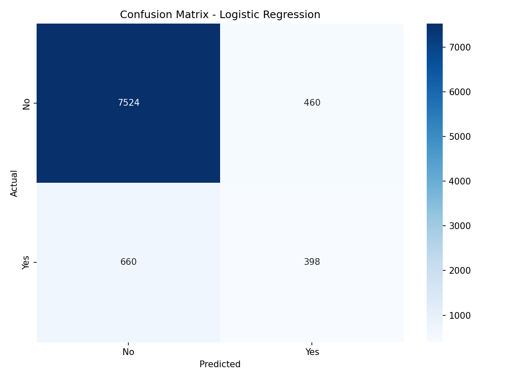
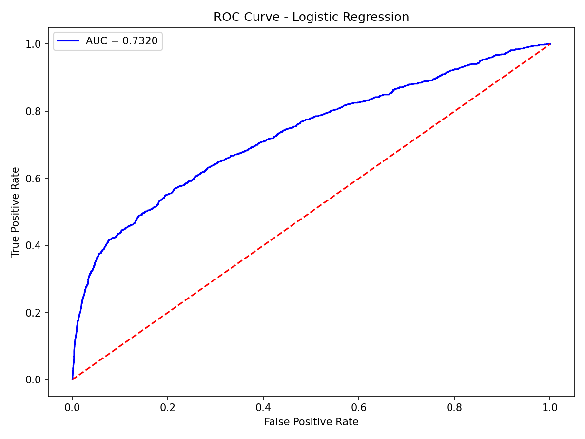

The baseline classification model — simple, fast, and interpretable
Understanding the algorithm
Logistic Regression is a statistical model used for binary classification tasks. Despite its name, it is a classification algorithm — not regression.
It uses the sigmoid function to map any input value to a probability between 0 and 1, then applies a threshold (usually 0.5) to classify the output as 0 or 1.
In this project, Logistic Regression serves as our baseline model — a reference point to compare more complex models against.
P(y=1) = 1 / (1 + e-z)
How we trained Logistic Regression
# Load preprocessed data
train = pd.read_csv('train.csv')
test = pd.read_csv('test.csv')
print("✅ Data loaded successfully!")
print("Train:", train.shape)
print("Test :", test.shape)
# Split Features & Target
X_train = train.drop('y', axis=1)
y_train = train['y']
X_test = test.drop('y', axis=1)
y_test = test['y']
print("X_train:", X_train.shape)
print("X_test :", X_test.shape)
from sklearn.linear_model import LogisticRegression
# Train Model
model = LogisticRegression(
max_iter=1000,
random_state=42
)
model.fit(X_train, y_train)
print("✅ Model trained successfully!")
Performance on the test set
| Class | Precision | Recall | F1-Score | Support |
|---|---|---|---|---|
| 0 — No | 0.92 | 0.94 | 0.93 | 7,984 |
| 1 — Yes | 0.46 | 0.38 | 0.42 | 1,058 |
| Accuracy | 0.876 | 9,042 | ||
| Macro Avg | 0.69 | 0.66 | 0.67 | 9,042 |
| Weighted Avg | 0.87 | 0.88 | 0.87 | 9,042 |

True Negatives: 7,524 | False Positives: 460
False Negatives: 660 | True Positives: 398

AUC Score: 0.73
Reasonable discrimination between classes
What do the numbers tell us?